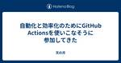

天の月
https://aki-m.hatenadiary.com/
ソフトウェア開発をしていく上での悩み, 考えたこと, 学びを書いてきます(たまに関係ない雑記も)
フィード

2024年6月のふりかえり
天の月
6月が終わったのでいつも通りふりかえりをしていきます。 月のふりかえり 仕事 社外活動/自己研鑽 プライベート 一年でやりたいことに対してのふりかえり 翻訳 登壇(プロポーザル) コミュニティを立ち上げる 続けていることに関して何かしらの単位を変える 1年間運動を継続する 国際カンファレンスに参加 月のふりかえり 仕事 今月から新たなPJが始まり、なおかつどちらも自分にとってかなりチャレンジングなプロジェクトだったため、かなり忙しい中楽しく仕事をしていました。今月の記録を見てみると、殆どの時間が仕事をしているか仕事のために直接的に役立つ情報収集の時間でした。 パブリックな場ということもあり、あ…
2日前

スクラムフェス三河にプロポーザルを出した
天の月
タイトルの通り、スクラムフェス三河にプロポーザルを出したのでその告知です。(スクラムフェス仙台と同じ締切日ということで告知が続いてしまいすみません) プロポーザル 概要 1本目 2本目 3本目 プロポーザルを出した理由 1本目 2本目 3本目 今回チャレンジしたいこと 1本目 2本目 3本目 おわりに プロポーザル confengine.com confengine.com confengine.com ※以降、上から順に1本目. 2本目, 3本目と表記していきます。 概要 1本目 本セッションでは、ソフトウェア工学に新たなページを作ろうとしている47機関というチームにjoinして約2年間が経…
2日前

スクラムフェス金沢の打ち合わせ第22回目をしてきた
天の月
今日もスクフェス金沢の打ち合わせをしていったので、話した内容を書いていきます。 今日も残作業を粛々と整理していきました。 www.scrumfestkanazawa.org 香盤表作成 全体を通した感想 香盤表作成 Day2の香盤表を作っていきました。香盤表を作りながら、以下のような話をしました。 Day2は会場が9時から使えるようになるが、9:20-オンラインで開催できるようにする必要があるので時間的には結構ばたばたな気がする 受付はまつさきさんとaki.mがいるが、aki.mは午前にセッションがあるのでえわさんに変わってもらう オンライン担当は特別つけなくていい OSTの説明は及部さんが作…
3日前

スクラムフェス仙台にプロポーザルを出した
天の月
www.scrumfestsendai.org スクラムフェス仙台にプロポーザルを出したので、今日はその告知です。 プロポーザル プロポーザルを出したきっかけ 今回チャレンジしたいこと おわりに プロポーザル confengine.com ■ 概要 本セッションでは、令和の学習指導要領の内容を紐解くことで、スクラムなどの知識を職場やコミュニティで広げようとしている方がより効果的に学びを伝えられるような場の形成方法や、個々人がそれぞれのペースで学びを促進するための勉強会の設計をお伝えします。 ■ 詳細 学習指導要領は、文部科学省が作成する日本の小中高等学校における教育内容や目標を定めたガイドライ…
4日前

スクラムフェス三河のプロポーザルを眺めたり、書いてみたりする会に参加してきた
天の月
distributed-agile-team.connpass.com こちらのイベントに参加してきたので、会の様子と感想を書いていこうと思います。(9:30くらいから遅れて参加しました) やってやろうじゃないかメカアジャイル！老舗製造業がプロダクションプリンターで取り組んだハードウェアアジャイルの実例を紹介します スクフェスに参加したら越境の一歩を踏み出せた話、そして小さな取り組みでも得られたもの（仮） インプットした情報をいい話だっただけで終わらせない！具現化するためにやったこと あまり語られないテスラの組織の秘密、そっと教えます。 グイグイ系QAエンジニアリングマネージャーの仕事 全体を…
5日前

オブジェクト指向のこころを読む会 Vol22に参加してきた
天の月
yr-camp.connpass.com こちらのイベントに参加してきたので、会の様子と感想を書いていこうと思います。 会の概要 会の様子 20章応用問題1 20章応用問題2 20章応用問題3 20章あなたの意見 21章応用問題 21章あなたの意見1 21章あなたの意見2 会全体を通した感想 会の概要 今日もタイトル通りオブジェクト指向のこころを読んで応用問題を解いていきました。 今日は20章と21章が対象で、応用問題を解いていきました。 会の様子 20章応用問題1 凝集性が低く、変更容易性も下がってしまうという話が出ていました。 また、コードを書くときに考えることも多くなってしまうのもデメリ…
6日前

大人のソフトウェアテスト雑談会 #217【志】に参加してきた 1
1
天の月
ost-zatu.connpass.com 今週もテストの街葛飾に行ってきたので、会の様子と感想を書いていこうと思います。 スクラムフェス大阪の感想戦 日本語と同じニュアンスの外国語 文房具ガチ勢 JaSST関西 全体を通した感想 スクラムフェス大阪の感想戦 皆さんスクラムフェス大阪に参加されていたので、感想戦をしていきました。 Ryoさんは発表を70minしたあとに体調不良でずっと寝ていたそうで残念ながらあまり楽しめなかったそうですが、各地域盛り上がっていて非常によかったという話をしました。 ただ、関西に住んでいる人からすると、スクラムフェス大阪と言っていながらもなんで大阪であまり人が集まっ…
7日前
アジャイルカフェ@オンライン 第55回に参加してきた
天の月
agile-studio.connpass.com こちらのイベントに参加してきたので、会の様子と感想を書いていこうと思います。 会の概要 会の様子 アジャイルコーチはスクラムマスターにどう働きかけるか？ アジャイルコーチとスクラムマスターはどういう関係性の変遷をたどるのか？ 「完璧」とは？ アジャイルコーチングの成功体験 立場は変わってもコーチングは必要 会全体を通した感想 会の概要 木下さん天野さん家永さんのアジャイルコーチ3人が、アジャイル実践者からの質問に対して深堀りをしていくイベントです。 今日のテーマは、「スクラムマスターが完璧だったらアジャイルコーチはいるの？」でした。 会の様子…
8日前
スクラムフェス大阪Day2に参加してきた
天の月
www.scrumosaka.org スクラムフェス大阪Day2に参加してきたので、会の様子と感想を書いていこうと思います。(ニセコサテライトでずっと参加していました) かみとさんの家へ&ズームイン 札幌トラックで登壇する ランチ さささんの講演を聴く Tommyさんの講演を聴く 金沢トラックで登壇をする トラックふりかえり BBQ 二次会 三次会 全体を通した感想 かみとさんの家へ&ズームイン 根本さんが迎えに来てくださり、近くのホテルからかみとさんのお家に向かいました。その後は各地域のズームインに参加し、羊蹄山をアピールしてきました。 おは羊蹄はハイコンテキストすぎてあまり伝わっていなかっ…
9日前
スクラムフェス大阪2024の札幌トラック(ニセコ)で発表してきた
天の月
スクラムフェス大阪2024の札幌トラック(ニセコ)で発表してきたので、そのふりかえりをしていこうと思います。 資料 speakerdeck.com 採択前 もし採択されたら、その採択されたサテライトに行こうと思っていたので、札幌トラック(ニセコ)で採択されたのはめちゃくちゃ嬉しかったです。(家族も喜んでいました) 準備 カタログの中身自体は、自分の中で既に一定の整理ができていた(自分の中でこういうときはこういう読書方法ということをまとめていた)ので、あとはそれを話としてどんな感じでつなげるかというところが今回のポイントでした。前回の反省点として、このつなげ方が今一つで、ただ色々な読書方法がある…
10日前
スクラムフェス大阪のDay1に参加してきた
天の月
www.scrumosaka.org 今日からスクラムフェス大阪が始まりました！今日はDay1に参加してきたので、会の様子と感想を書いていこうと思います。 くどうさんにニセコに送ってもらう かみとさん家に到着＆ホテルにチェックイン 横道さんのkeynoteを聴く 地域トラックによるセッション紹介 くどうさんにニセコに送ってもらう くどうさんにニセコに車で送ってもらいました。車の揺れに弱い(眠くなる)ということもあって、後半は半分意識が飛んでいました笑 最近オンラインコミュニティに参加していると、札幌に住んでいる方が結構アジャイルコミュニティに多く参加しているという話をしました。ただ、アジャイル…
11日前

自動化と効率化のためにGitHub Actionsを使いこなそうに参加してきた
天の月
devops-study.connpass.com こちらのイベントに参加してきたので、会の様子と感想を書いていこうと思います。 会の概要 会の様子 田中さんの講演 GitHub Actionsの簡単な説明 アクションの危険性 料金 Pushだけじゃないイベント駆動 マトリックス キャッシュを使った高速化 Q&A GitHub ActionsにてWindowsが使用できるのは初耳だったのだが、利用できるOSはWindowsServerシリーズか？ GitHub Actions初心者は何から手をつけるとよいか？ AzureDevOpsでも同じようなことはできるのか？ actは使ったほうがよいのか…
13日前
オブジェクト指向のこころを読む会 Vol21に参加してきた
天の月
yr-camp.connpass.com こちらのイベントに参加してきたので、会の様子と感想を書いていこうと思います。 18章応用問題1 18章応用問題2 18章応用問題3 あなたの意見 19章応用問題1 19章応用問題2&19章応用問題3 全体を通した感想 18章応用問題1 BridgeパターンもDecoratorパターンも、元々存在する概念やオブジェクトを構造化するようなデザインパターンになっているので、構造のパターンと言ってよいのではないか？となりました。 ただし、構造のパターンと振る舞いのパターンの違いってそもそもなんだろう？という話になり、特にDecoratorパターンはどのような点…
13日前
大人のソフトウェアテスト雑談会 #216【ひざし】 に参加してきた
天の月
ost-zatu.connpass.com 今週もテストの街葛飾に行ってきたので、会の様子と感想を書いていこうと思います。 おおひらさんのwikipedia QAコンサルタント 2023年のコミュニティ動向 PdMというロールへの疑問 全体を通した感想 おおひらさんのwikipedia テスト界隈の方々はWikipediaがある方も多いということで、おおひらさんのWikipediaも作るとよいのではないか？という話が出ていました。 なお、アジャイル界隈の方だとみほらぶさん以外はまだ見たことがなく、平鍋さんですら作られていないということでした。 ja.wikipedia.org QAコンサルタン…
14日前

「個別最適な学び」と「協働的な学び」の一体的な充実を目指してに参加してきた
天の月
educational-psychology.connpass.com こちらのイベントに参加してきたので、会の様子と感想を書いていこうと思います。 14章のエキスパート活動 学校で一番楽しいこと 同一賃金の理由は？ 目標とする子供像への違和感 当時の文脈のカウンターカルチャー 名目と本音 やや危険なプロジェクト 学力が上がるメカニズム ジグソー活動 クロストーク 全体を通した感想 14章のエキスパート活動 最初にエキスパート活動をしていきました。以下、話をしたトピックを記載していきます。 学校で一番楽しいこと 学校で一番楽しいことと聞かれたとき、勉強をしに行っているのにもかかわらず勉強が一番…
15日前
アジャイルカフェ@オンライン 第54回に参加してきた
天の月
agile-studio.connpass.com こちらのイベントに参加してきたので、会の様子と感想を書いていこうと思います。 会の概要 会の様子 やる気のあるチームとは？ やる気の障壁 スクラムでチームは最高のやる気状態を作れるのか？ チームの一部の人が後ろ向きになってしまう場合はやる気をどう引き出すのか？ 会全体を通した感想 会の概要 天野さん家永さん木下さんのお三方が、アジャイル実践者からの悩みに対して色々と話しをしていくイベントです。(今日は家永さん木下さんのお二人でした) 今日のテーマは、「チームがやる気になるには？」でした。 会の様子 やる気のあるチームとは？ 木下さん家永さんそ…
17日前
スクラムフェス金沢の打ち合わせ第20回目をしてきた
天の月
今日もスクフェス金沢の打ち合わせをしていったので、話した内容を書いていきます。 今日も残作業を粛々と整理していきました。 www.scrumfestkanazawa.org Day1の食事発注の確認/Day2の食事発注の確認 Xバナー ノベルティ ネームプレートの発注 オンラインチケットしか買えない状況でNetworkingに参加するのはありか？ 香盤表決め 進めかたのふりかえり 全体を通した感想 Day1の食事発注の確認/Day2の食事発注の確認 Day1とDay2の食事発注が無事に完了したという話でした。ただ、出たゴミをどうするのかという問題はあり、発注業者に回収してもらうことができないか…
17日前
A-CSM(Advanced Certified ScrumMaster®)を取得した
天の月
A-CSM研修を受講して無事に取得もできたので、今日はその体験記を書いていきます。 主にこれから研修受講を検討されている皆さんの参考になればと思っています。 受講経緯 受講した研修と研修選定理由 参加者層 研修内容 研修で良かったところ JoeやMihoさんsekiさんが盛り上げてくれた 丁寧な質疑応答 長らくスクラムを実践されている方々とのつながり コミュニティへの参加 研修で今ひとつだったところ 研修全体を通した感想 受講経緯 きょんさんと1on1をしていた際、今後自分がやりたい仕事をしていくための手段の一つとして、エミネンスや実務経験以外で目に見える形でスキルを示せるといいよねという話が…
19日前
オブジェクト指向のこころを読む会 Vol20に参加してきた
天の月
yr-camp.connpass.com こちらのイベントに参加してきたので、会の様子と感想を書いていこうと思います。 今回からしばらくは、タイトル通りオブジェクト指向のこころを読む会になっています(???) 16章 応用問題1 16章 応用問題2 割り勘モデリングや自動販売機で分析マトリクスは使えるのか？ 17章 応用問題1 全体を通した感想 16章 応用問題1 本書で触れられている概念・仕様・実装の3レベルであれば、概念レベルの話に一番近そうだという話が出ていました。 本書では具体的に使うパターン名まで分析マトリクスの中で踏み込まれていますが、これはあくまでも概念を洗い出した上で次のステッ…
20日前
「LeanとDevOpsの科学」著者 Keynote特別公開！開発生産性Conference予習会に参加してきた
天の月
developer-productivity-engineering.connpass.com こちらのイベントに参加してきたので、会の様子と感想を書いていこうと思います。 イントロダクション〜DevOpsの役割〜 DORA SPACE 開発者は「良い一日」をどうしたら過ごせるのか？ 文化に影響する働き方とテクノロジー 最新(2023年)の研究事例 全体を通した感想 イントロダクション〜DevOpsの役割〜 DevOpsとは仕事を持続可能かつ生産的に行っていくためのものであり、その中でも特にDORAとSPACEは生産性と幸福に対する解像度を高めるために活用できるという話がありました。 DORA…
20日前
大人のソフトウェアテスト雑談会 #215【疲労】に参加してきた
天の月
ost-zatu.connpass.com 今週もテストの街葛飾に行ってきたので、会の様子と感想を書いていこうと思います。 サイゼリヤ QA採用 形式手法 全体を通した感想 サイゼリヤ togetter.com fs-ichikawa.org サイゼリヤはシステム開発費用やオペレーション費用(包丁を置かないなど)を徹底的に削っているのがすごいという話やサイゼリヤでアツい商品の話(オリーブオイルやピザなど)をしていきました。 ただ、価格が安すぎるあまり(?)日本では赤字になっているという説もあり、海外でみると黒字になっているとはいえうまくいっているのかいっていないかよくわからない側面があるという…
21日前
2024年5月のふりかえり
天の月
5月が終わったのでいつもどおりふりかえりをしていきます。 月のふりかえり 仕事 社外活動/自己研鑽 プライベート 一年でやりたいことに対してのふりかえり 翻訳 登壇(プロポーザル) コミュニティを立ち上げる 続けていることに関して何かしらの単位を変える 1年間運動を継続する 国際カンファレンスに参加 月のふりかえり 仕事 前半は先月に引き続き、特定のプロジェクトアサインがなかったので*1幾つか資料を作ったり、スクラム研修の講師をしたり提案に入ったりしていました。スクラム研修の講師は3回目くらいですが、こういうふるまいが大切だというのがだんだん分かってきて、初めの頃はあまりかんばしくなかった参加…
23日前
吉羽 龍太郎さんとソニーが語るプロダクトマネジメント - TechLovers #2に参加してきた
天の月
sony.connpass.com こちらのイベントに参加してきたので、会の様子と感想を書いていこうと思います。 ステークホルダーとの付き合い方を考える ステークホルダーのイメージ ステークホルダー分析 影響力が大きい層からの意見のFBにNoを言う方法 ソニーにおけるプロダクトマネジメント スマホアプリ事例紹介 ソニーにおけるプロダクトマネジメントの特長 機器の多機能化 権限委譲の効果 デリゲーションポーカー実施時のコツ ソフト/ハードの連携 Q&A ハードがあるとハード側がWFで仕様が固まっているのでそもそもアプリ側になにか合わせることはないイメージだが、アプリ側がハード側に合わせるみたいな…
24日前
スクラムフェス金沢の打ち合わせ第19回目をしてきた
天の月
今日もスクフェス金沢の打ち合わせをしていったので、話した内容を書いていきます。 今日も残作業を粛々と整理していきました。 www.scrumfestkanazawa.org 優先順位の確認 ご飯の発注 軽食の発注 ノベルティの発注 タイムスケジュール決め 全体を通した感想 優先順位の確認 バックログの優先順位を確認していきました。発注系の優先順位が高く、なおかつご飯を出すことは必ず決まっているので、まずはご飯の発注をしていこうという話になりました。 ご飯の発注 ご飯の発注先を決めました。Day1の夜ご飯に関しては、全員分は用意しなくても良いということだったので、50人分くらいを想定して発注し、…
24日前
エンジニアの知的生産術 ―効率的に学び、整理し、アウトプットする ー FL#55に参加してきた
天の月
forkwell.connpass.com こちらのイベントに参加してきたので、会の様子と感想を書いていこうと思います。 会の概要 会の様子 西尾さんの講演〜LLMを使いこなすエンジニアの知的生産術〜 書籍を出版してからの5年間と今後の5年間 LLMの回答と今後の時代における本書の価値 西尾さんの知的生産術の変化 Q&A アウトプットの見た目部分に関して意識していることはあるか？ 先輩から後輩へさりげないアウトプットのコツはあるか？ LLMを使いこなす知的生産術の執筆予定はあるか？ 仕事している最中に得た知識をアウトプットできる状態にするためにしていることや意識していることはあるか？ 教育現場…
25日前
Spotifyの開発生産性向上事例 - 効果的なDevOpsアプローチとそのリスクとはに参加してきた
天の月
developer-productivity-engineering.connpass.com こちらのイベントに参加してきたので、会の様子と感想を書いていこうと思います。 会の概要 会の様子 DRE Favorable Context 生産性を高めるために必要な3要素 データ、情報、知識の関係性 アクティビティ、アウトプット、アウトカム、インパクトの関係性 失敗事例 意味ある分析をするために メトリクスの罠 社内で議論のきっかけになるメトリクス メトリクスを使う注意点 Q&A メトリクスの中で特に重視しているステップや項目はあるか？ DORAメトリクスを使った測定は、Spotifyやその他の…
1ヶ月前
オブジェクト指向のこころを読む会 Vol19に参加してきた
天の月
yr-camp.connpass.com こちらのイベントに参加してきたので、会の様子と感想を書いていこうと思います。 前々回に引き続き、以下のお題をみんなでやっていきました。 github.com モデリング 全体を通した感想 モデリング 約1時間くらいモデリングをして、結果的に以下の整理で落ち着きました。 主に議論したポイントに関しては、以下に箇条書きで記載します。 文章から読み取れない部分に関しては、とりあえず決めの問題にして、なるべくシンプルな仕様を前提としてやっていくようにしていきたい 飲み会の設定をいつやるのか？参加者の削除が仕様として含まれていることと、一般的な飲み会ではどういう…
1ヶ月前
大人のソフトウェアテスト雑談会 #214【睡眠】に参加してきた
天の月
ost-zatu.connpass.com 今週もテストの街葛飾に行ってきたので、会の様子と感想を書いていこうと思います。 QAなんもわからん会 品質とは組織が想像する顧客にとっての価値なのか？ 仕事の楽しさ 全体を通した感想 QAなんもわからん会 先日nacoさんが主催してくださったQAなんもわからん会に関して話をしてきました。 イベントに登録していて、イベントで楽しみだった人たちと話せなかったというのは残念ではありつつも、全体的に良いイベントだったという話や、意外とスタートアップ系のQAよりも第三者検証のQAの方の方が多かった印象があるという話が出ていました。 aki-m.hatenadi…
1ヶ月前
スクラムフェス金沢で登壇できることになりました
天の月
スクラムフェス金沢で登壇ができることになったので、今日はその告知です。 発表の概要 今回チャレンジしたいこと 発表に向けた意気込み confengine.com 発表の概要 コミュニティを作って育てていくのは、コミュニティに関わるすべての参加者ですが、コミュニティを育てていくためのノウハウやTipsはコミュニティ運営者やコミュニティを立ち上げようと思っている人の視点で語られることが多いと個人的には感じています。そこで本セッションでは、「コミュニティ参加者」(※)の視点に立ち、コミュニティをどのように活用することで自身がコミュニティから恩恵をより多く享受できるか？その活用方法を取ることでコミュニ…
1ヶ月前
スクラムフェス金沢の打ち合わせ第18回目をしてきた
天の月
今日もスクフェス金沢の打ち合わせをしていったので、話した内容を書いていきます。 今日は残作業を粛々と整理していきました。 www.scrumfestkanazawa.org 発注系作業の共有 スピーカーTシャツの発注 経費精算 トランシーバー チケットの払い戻し Miroを使うか 食事の発注 カメラマン プロポーザルのreject 全体を通した感想 発注系作業の共有 発注系のプロフェッショナルであるリサさんから、全体に向けて発注系(Xバナー、ネームプレート)で必要な作業の共有をしてもらいました。 スピーカーTシャツの発注 スピーカーTシャツを発注するにあたってアンケートをお願いしていたのですが…
1ヶ月前